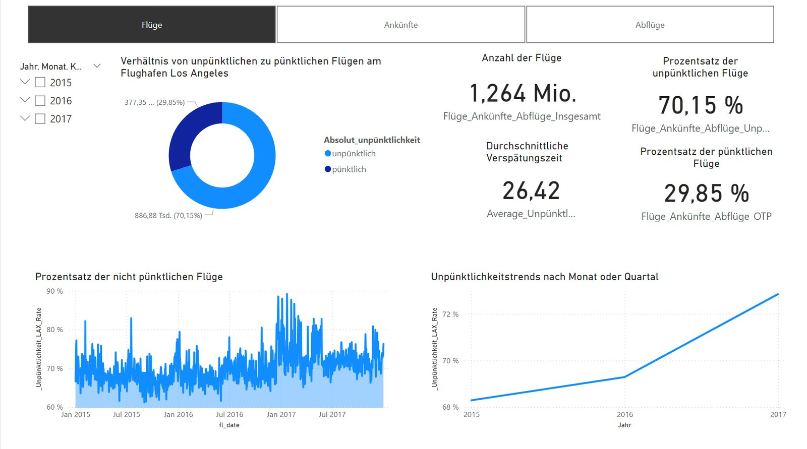

Abschlussprojekt · Business Intelligence Specialist (StackFuel) · Juni 2024
Ein Flughafenbetreiber will unpünktliche Flüge regelmäßig untersuchen. Mein Bericht analysiert 1,26 Millionen Flüge von und nach LAX (2015–2017) – getrennt nach Abflug und Ankunft: wichtigste Kennzahlen, die unpünktlichsten Airlines und die Zeiträume, in denen sich Unpünktlichkeit häuft.
Unpünktlich = Abweichung von mindestens 5 Minuten vom Flugplan, zu spät oder zu früh (Vorgabe der Aufgabe). Ø Unpünktlichkeit bezieht sich nur auf unpünktliche Flüge.
Der Power-BI-Bericht

Screenshots aus Power BI Desktop. Die Schaltflächen Flüge / Ankünfte / Abflüge oben im Bericht steuern alle Kennzahlen einer Seite.
Erkenntnisse
Zu früh ist bei Ankünften das häufigste Problem. 46 % der Flüge landen mindestens 5 Minuten vor Plan, nur 36 % zu spät. Für den Flughafen heißt das: Gates und Bodenpersonal müssen früher bereitstehen.
Top 3 Airlines nach Ø Unpünktlichkeit: Envoy Air (39,6 Min, aber nur 309 Flüge), Frontier Airlines (30,7 Min, 78 % unpünktlich) und JetBlue Airways (30,1 Min, 74 % unpünktlich).
Verspätungen bauen sich über den Tag auf. Vormittags ist der Anteil unpünktlicher Flüge am niedrigsten (65 %), abends am höchsten (75 %). Der Dezember ist der schwächste Monat.
Leicht steigender Trend: von 68 % unpünktlichen Flügen (2015) auf 73 % (2017).
Lange Rollzeiten sind ein Warnsignal. Laut Key-Influencers-Analyse steigt die Wahrscheinlichkeit der Unpünktlichkeit bei über 37 Minuten Taxi-In um den Faktor 1,26.
Umsetzung
SQL
Eigene PostgreSQL-Abfrage direkt in Power BI: nur LAX, 2015–2017, ohne gestrichene/umgeleitete Flüge; Abflug/Ankunft per CASE WHEN, Abweichung per ABS.
Power Query
Uhrzeiten im Format hhmm (ohne führende Nullen, mit 2400) in echte Zeitwerte umgewandelt.
Datenmodell & DAX
Kalendertabelle, Airline-Dimension, berechnete Spalte pünktlich/unpünktlich, über 30 Measures; eine Auswahltabelle mit SWITCH schaltet zwischen Flügen, Ankünften und Abflügen.
Storytelling
15-minütige Präsentation der Ergebnisse für die Abteilungsleitungen.
Daten & Rückblick
Quelle
Bureau of Transportation Statistics (U.S. Department of Transportation), bereitgestellt in einer Kursdatenbank: 1.264.229 Flüge.
Stand
Kursprojekt aus dem Jahr 2024. Die .pbix enthält die Daten; der Zugang zur Datenbank besteht nicht mehr.
Heute würde ich
zusätzlich den Branchenstandard „verspätet ≥ 15 Min“ zeigen (Ankunft 23 %, Abflug 22 %), „zu früh“ und „zu spät“ getrennt ausweisen und für Rankings eine Mindestanzahl an Flügen festlegen.